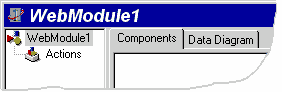
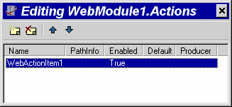

Hello ISAPI
Hello ISAPI
© Delphi Web DevelopmentНа этой страничке вы узнаете как создать и запустить простейшее ISAPI приложение сервера.
1. Запустите Delphi, нажмите на меню File | New
2. В диалоговом окне New Items выберите Web Server Application и нажмите OK
3. Появится диалоговое окно New Web Server Application. Пункт ISAPI/NSAPI Dynamic Link Library выбран по умолчанию, поэтому просто нажмите OK.
4. Вы попали в интерактивную среду разработки ISAPI расширения сервера.
В вашем проекте содержится специальный модуль WebModule, он позволяет помещать в него различные компоненты и обеспечивает работу с ними.
5. Дважды щелкните мышкой на WebModule, появится окно Action Editor, предназначенное для создания и редактирования обработчиков событий ActionItem.
6. В диалоговом окне Action Editor нажмите кнопку Add New, при этом в окне Object Inspector отобразятся свойства и события созданного ActionItem.
7. Установите свойство Default созданного ActionItem равным true.
8. Создайте обработчик события OnAction для созданного ActionItem и напишите в него код:
Response.Content := '<html><body>Hello ISAPI!</body></html>';
У вас должен получиться код приведенный в примере 1.
Пример 1
procedure TWebModule1.WebModule1WebActionItem1Action(Sender: TObject;
Request: TWebRequest; Response: TWebResponse;
var Handled: Boolean);
begin
Response.Content := '<html><body>Hello ISAPI!</body></html>';
end;
9. Нажмите на меню File | Save All, выберите имена main.pas и helloisapi.dpr для файлов проекта и сохраните их на диск.
10. Нажмите на меню Project | Build helloisapi. Будет скомпилирован файл helloisapi.dll.
11. Поместите полученный файл в каталог для ISAPI DLL вашего веб сервера. Для IIS 4.0 это каталог /cgi-bin/. Проверьте установлено ли право execute на этот каталог в веб сервере и установите доступ на чтение и запуск для соответствующих пользователей в NTFS.
12.Запустите на выполнение ваше приложение, набрав в браузере полный URL. Например, если ваш сервер имеет URL http://localhost, вы положили DLL в каталог /cgi-bin/, то полный URL будет http://localhost/cgi-bin/helloisapi.dll.